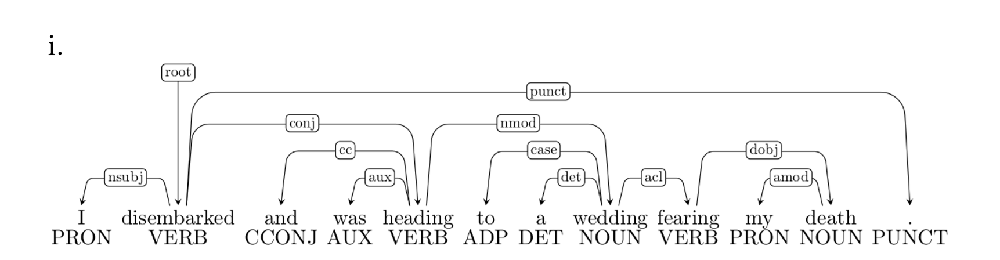
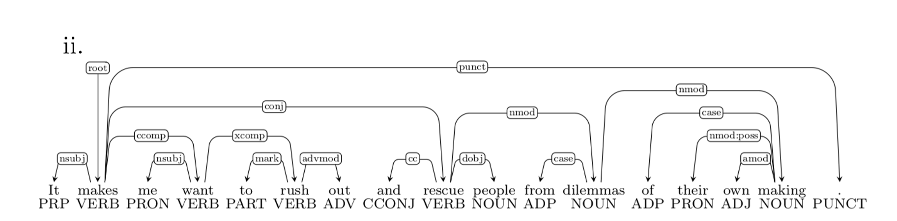
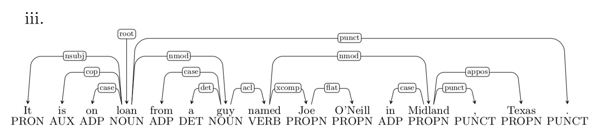
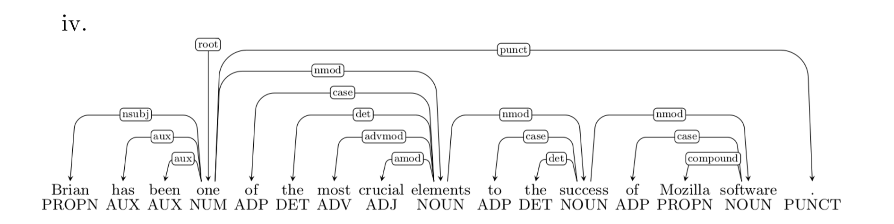
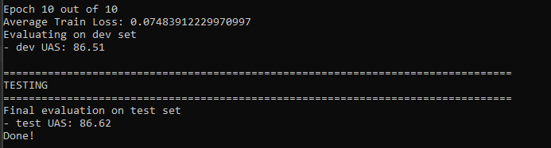
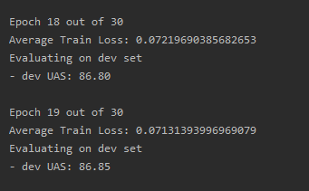
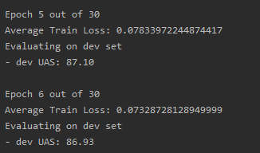

Given the sentence:
I parsed this sentence correctly
| Stack | Buffer | New dependency | Transition |
|---|---|---|---|
| [ROOT] | [I, parsed, this, sentence, correctly] | Initial Configuration | |
| [ROOT, I] | [parsed, this, sentence, correctly] | SHIFT | |
| [ROOT, I, parsed] | [this, sentence, correctly] | SHIFT | |
| [ROOT, parsed] | [this, sentence, correctly] | parsed I | LEFT-ARC |
| [ROOT, parsed, this] | [sentence, correctly] | SHIFT | |
| [ROOT, parsed, this, sentence] | [correctly] | SHIFT | |
| [ROOT, parsed, sentence] | [correctly] | sentence this | LEFT-ARC |
| [ROOT, parsed] | [correctly] | parsed sentence | RIGHT-ARC |
| [ROOT, parsed, correctly] | [] | SHIFT | |
| [ROOT, parsed] | [] | parsed correctly | RIGHT-ARC |
| [ROOT] | [] | ROOT parsed | RIGHT-ARC |
For each word of the sentence, it need first be shifted onto the stack and then reduced by right\left arc. Therefore, there would be parsing steps for a sentence containing words regardless of the initial configuration.
Dependencies Error:
Prepositional Phrase Attachment Error Verb Phrase Attachment Error Modifier Attachment Error Coordination Attachment Error
Given four sentences, each one has one dependency error from above.

Error type: Verb Phrase Attachment Error
Incorrect dependency: wedding fearing
Correct dependency: heading fearing

Error type: Coordination Attachment Error
Incorrect dependency: makes rescue
Correct dependency: rush rescue

Error type: Prepositional Phrase Attachment Error
Incorrect dependency: named Midland
Correct dependency: guy Midland

Error type: Modifier Attachment Error
Incorrect dependency: elements most
Correct dependency: crucial most
In parser_model.py, weight matrices contain the weight of bias term, so the shape of which is added 1 on rows (first dimension). Also, of the outputs from forward function, the last column (second dimension) of hidden layer outputs is filled with ones representing bias term.
In terms of train_for_epoch in run.py, I take advantage of numpy broadcasting. For each sentence, the backpropagation for all layers is , since we are applying the sum of gradients from one minibatch, my code alters this formula into , where is the input matrix of current layer with shape of (batch size, input features) and is the error term matrix with shape (batch size, output features). The dot product would be the summation of gradients aggregating by batch size.
With the default hyperparameters (hidden_size=200, lr=0.0005, epoch=10), I got the following results:

Then, I implemented a simple grid search on debug mode. First, I changed learning rate to 0.001 to achieve a quick convegence. Accordingly, with differents set of hidden_size and epoch, the grid search results are as bellow:
| hidden_size/epoch | 100 | 150 | 200 | 250 | 300 | 400 |
|---|---|---|---|---|---|---|
| 10 | 0.238 62.22 |
0.215 68.63 |
0.232 66.95 |
0.271 59.91 |
0.220 65.02 |
0.227 65.24 |
| 20 | 0.213 67.21 |
0.144 68.84 |
0.279 65.99 |
0.190 57.46 |
0.182 66.09 |
0.120 73.86 |
| 30 | 0.136 70.85 |
0.121 73.91 |
0.132 74.96 |
0.150 70.57 |
0.123 67.50 |
0.132 73.04 |
The best parameter set is epoch=30, hidden_size=200. After about 20 epoches, the loss and UAS did not change a lot and the result is not much better than 10 epoch

Then, I tried hidden_size=400, due to the time limitation, I have only run 6 epoches and the final result is as below:

It is slightly better than above results, but not very much.